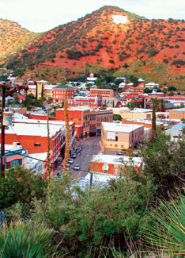

Bisbee, Ariz., is as rich in history as it once was in precious metals. It was “discovered” in 1877 by troops chasing Apaches up Tombstone Canyon, where one scout spotted rich veins of copper ore. In just a few years, Bisbee was a boomtown - the “Queen of the Copper Camps.” By the early 1900s, it was the largest and most cultured city between St. Louis and San Francisco.
Unlike other mining towns in the region that eventually became ghost towns, Bisbee adapted, surviving the depletion of rich ore and the mine shutdowns. When the bust came in the 1970s, hundreds of houses went on sale at bargain prices. Artists, hippies, retirees and investors joined the ex-miners, bringing with them a culture that townspeople fondly refer to as “unique,” “diverse” and even “quirky.” In 2005, The National Trust for Historic Preservation gave it a more eloquent designation - one of “America’s Dozen Distinctive Destinations.”
Visitors love Bisbee’s many colorful restaurants (such as the Bisbee Breakfast Club, where coffee-charred chicken salad is a specialty); shopping in the antique stores and artist galleries; and descending 1,500 feet into the Copper Queen Mine in hard hats and slickers, carrying miner’s lanterns. Visitor lodging ranges from the elegant Copper Queen Hotel, built in 1902, to the Shady Dell, a collection of 1950s vintage travel trailers furnished with Life magazines from yesteryear and still-operational record players.
Population: 6,090
Median House Price: $88,400
Climate: Relatively cool due to altitude. January average: 42 degrees; July average: 75 degrees.
Natural Assets: Elevation: 5,566 feet; lots of wide-open spaces in the surrounding area, such as Coronado National Forest and Ramsey Canyon Preserve; hundreds of thousands of hummingbirds migrate through nearby San Pedro River Valley each year.
Sustainability Initiatives: Signee of Mayors Climate Protection Agreement; strong emphasis on land conservation.
Check out the other towns on our 2009 list of Great Places You’ve Never Heard Of.|
 DOUG HOCKING Rich history, diverse cultures, colorful buildings and mild weather define Bisbee, Ariz. |
|
|